NLP
Executive Summary
In this section, we employ advanced Natural Language Processing (NLP) techniques to delve deeper into textual data from various sources, extracting meaningful insights and conducting a nuanced analysis. Our primary objective is to identify and analyze the key topics discussed across different subreddits and external datasets, examining how these topics correlate with various factors such as the sentiment of the post text, labels extracted from the content (e.g., ‘YTA,’ ‘NTA’), and how these topics have evolved over time. By doing so, we aim to uncover patterns and draw conclusions about user behavior, preferences, and trends across different platforms.
Through our topic analysis, we uncovered striking differences in the purpose and usage of the subreddit AskReddit compared to other platforms like Dear Abby or subreddits such as Am I Overreacting and Am I the Asshole. Unlike the other sources, which primarily serve as platforms for users to seek life advice or moral judgments, AskReddit emerged as a space where users frequently sought suggestions on topics like movies or posed questions that were too vague to categorize effectively using keywords. This underscores a fundamental difference in how the platform is utilized, highlighting its more generalized and open-ended nature compared to the focused problem-solving observed in other subreddits.
On the other hand, when we examined the external dataset Dear Abby, we found it closely aligned with the topics and concerns discussed in subreddits such as Am I Overreacting and Am I the Asshole. These sources shared a remarkable consistency in the themes explored, reflecting recurring patterns in human concerns and dilemmas. Furthermore, our analysis revealed that the nature of these discussions has remained steady over time, indicating that societal concerns expressed through these platforms have not significantly evolved, regardless of the medium or the passage of time.
In exploring correlations, several intriguing patterns emerged. For instance, posts discussing pets often leaned towards more negative sentiment, suggesting that users may express heightened anxiety or concern when addressing issues related to their animals. Conversely, topics surrounding wedding or marriage-related issues revealed a surprising trend: users were generally less likely to judge individuals harshly or label them as “a**holes” in these contexts. This points to a more empathetic or understanding approach when the subject matter involves emotionally significant life events.
Overall, our analysis offers a detailed perspective on the dynamics of online discourse across platforms, providing valuable insights into user behavior and the societal norms that influence how individuals express themselves and seek advice in digital spaces.
Analysis Report
Code for report can be found here
Topic Modeling
Which Model to use?
Our team explored a variety of methodologies, including TF-IDF, Latent Semantic Analysis (LSA), and Non-Negative Matrix Factorization (NMF), to effectively identify topics within each data source. To determine the most suitable approach, we conducted a focused experiment using the Am I the Asshole (AITA) subreddit as a case study. This platform’s diverse content provided an ideal testing ground for evaluating the feasibility and effectiveness of each method. Once the most reliable and insightful technique was identified through this testing process, we successfully scaled and applied it across other datasets, ensuring consistency and relevance in our topic analysis across multiple sources.
TF-IDF
When analyzing the TF-IDF scores, we started by examining the words with the highest scores in each text. Interestingly, we found that even the top-ranked words generally had low scores, with the distribution heavily skewed to the right. This sparked our curiosity—what kinds of words had the highest TF-IDF scores? Upon closer inspection, we discovered that these were often names rather than topic-specific terms. This suggests an intriguing interpretation: the distinguishing factor among the documents wasn’t primarily the subject matter, but rather the individuals involved. It’s a conclusion that aligns well with the nature of the data. An interesting analysis but not suitable for our analysis. We’ll move on to our next methods : LSA and NMF.
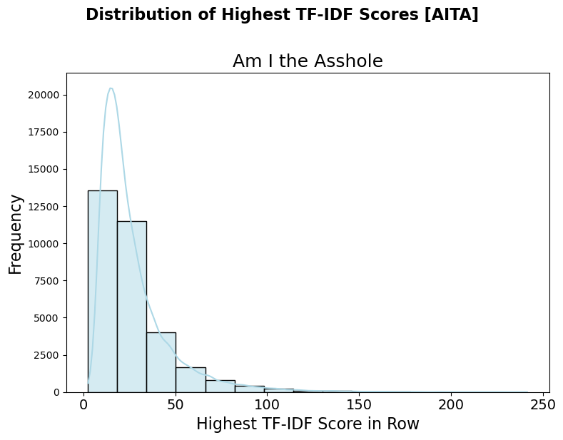
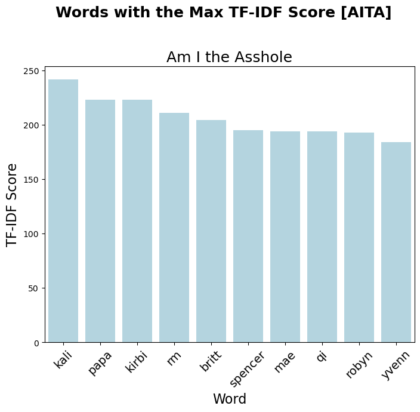
Figure 1 tf-idf distribution/analysis
LSA and NMF
What is LSA and NMF? Latent Semantic Analysis (LSA) and Non-Negative Matrix Factorization (NMF) are matrix factorization techniques used for topic analysis. LSA uses Singular Value Decomposition (SVD) to identify latent semantic structures by reducing the dimensionality of the term-document matrix, capturing relationships between terms and documents. NMF, on the other hand, enforces non-negativity constraints, resulting in more interpretable topics by decomposing the matrix into non-negative term-topic and document-topic components. While LSA is effective for overlapping topics, NMF excels in sparsity and interpretability.
Which Model to Choose? Ultimately, we selected NMF due to its superior ability to capture the distribution of topics. Not only did the NMF model outperform LSA in extracting meaningful topics, as will be demonstrated later, but the distribution of topics illustrated in Figure 2 clearly underscored why it was the optimal choice.
| Topic | LSA | LSA (Ratio) | NMF | NMF (Ratio) |
|---|---|---|---|---|
| 1 | 31227 | 96% | 14080 | 43% |
| 2 | 175 | 1% | 9448 | 29% |
| 3 | 83 | 0% | 4966 | 15% |
| 4 | 583 | 2% | 1423 | 4% |
| 5 | 331 | 1% | 2482 | 8% |
Figure 2: Distribution of topics for each model
Topic Analysis
The figures below illustrate the key words associated with each topic across all our data sources. Can you identify the similarities and differences? Most of the words are grouped within similar topics, allowing us to categorize themes like friendships, dating, and marriage. However, topics from the “AskReddit” subreddit are challenging to conceptualize based on the words alone. This could be due to the lack of a consistent theme across the posts.
In contrast, the other two subreddits (“Am I the Ahole” and ”Am I Overreacting”) and the ”Dear Abby” column show notable similarities, with most topics centered around work, friendships, and relationships. An intriguing finding within the ”Am I the Ahole” subreddit was a unique topic involving pets, where users debated who was at fault—the pet or the owner.
Figure 4 provides a breakdown of these topics into single words, highlighting the consistency across all sources except “AskReddit.”
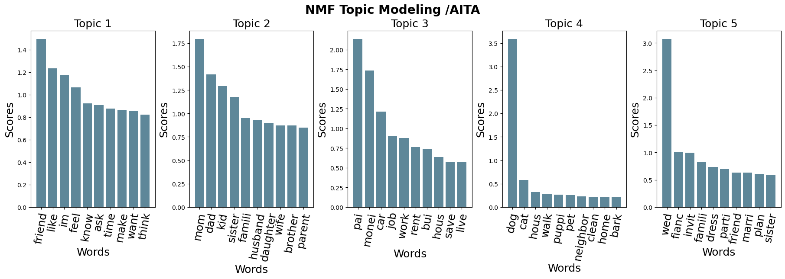
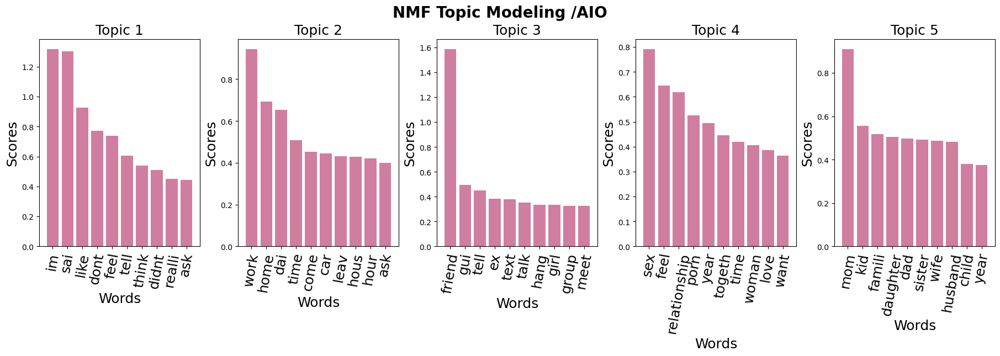
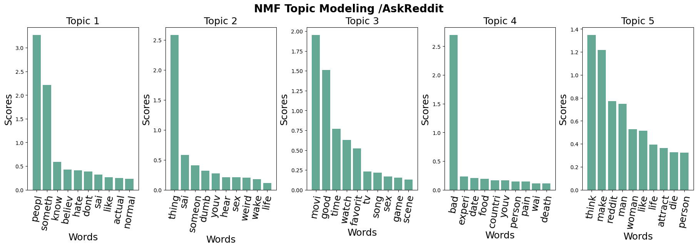
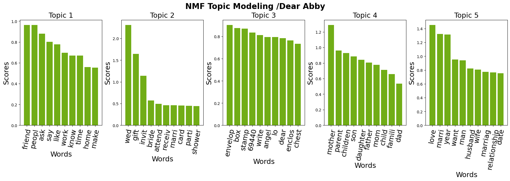
Figure3 : Topic Analysis for each subreddit + Dear Abby
| Topics/ Subreddits | Am I the Asshole | Am I Overreacting | Ask Reddit | Dear Abby |
|---|---|---|---|---|
| 1 | Friends | Personal experience | Friends | |
| 2 | Family | work | Wedding | |
| 3 | Money | friend | movies | |
| 4 | Pet | relationship | family | |
| 5 | Wedding | mom | Marriage |
Figure4: Topics in words
Did the topics chagne over time?
Over time, the primary topics discussed in Dear Abby and *Am I the A**hole (AITA)*—such as friendships, family, marriage, and weddings—have remained consistent. However, a notable new topic has emerged in AITA: discussions centered around pets. This shift could be interpreted in two ways.
First, it may reflect the growing prevalence of pets in households and their increasingly significant role in human lives, making pet-related dilemmas a common topic of discussion. Alternatively, this change could be attributed to the platform’s nature. Unlike Dear Abby, which was published in newspapers and likely encouraged more polished and formal submissions, AITA operates in the casual, online environment of Reddit. This less formal setting might make users more inclined to post about everyday issues, such as those involving pets, without the expectation of adhering to traditional standards of decorum.
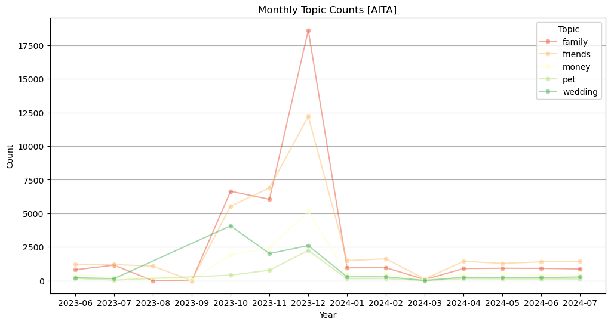
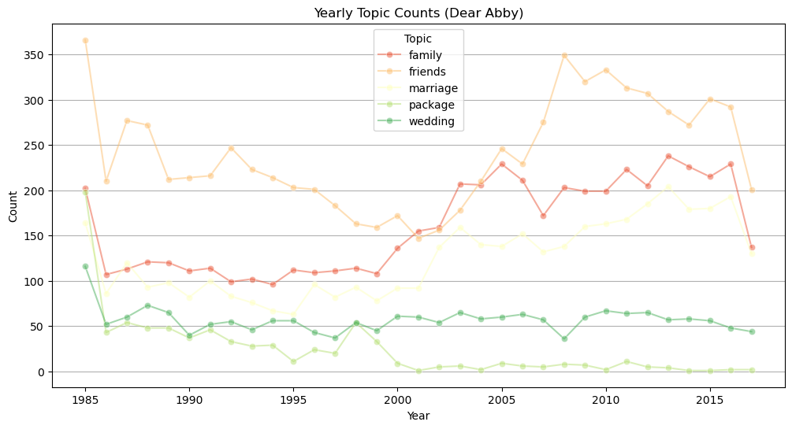
Additional Insights
AITA label/topic correlation
Is there a correlation between topics and the labels assigned to writers in the comments? To explore this, we examined whether people tend to be biased toward assigning specific labels to certain topics.
As shown in Figure 5, posts related to weddings and marriage often receive more lenient judgments, with writers frequently labeled as “not the ahole” (NTA). In contrast, topics involving family, friends, and money have the highest ratios of ”you’re the ahole” (YTA) labels. Among these, posts about friendships stand out with the lowest proportion of NTA labels.
For friend-related posts, commenters tend to categorize writers as the ahole more often and “not the ahole” less frequently. However, for marriage-related posts, writers are more commonly judged as NTA. This suggests that when it comes to marriage, people may share a more uniform perspective on what is right and wrong. In contrast, judgments about friendships seem to be more subjective, likely because friendships often involve nuanced contexts and varied dynamics. Marriage and weddings, on the other hand, tend to follow more universal norms, allowing for greater consensus in opinions.
Figure 5 illustrates how sentiment varies across topics and labels. One notable observation is that posts in the “pet” category have the most negative sentiment scores on average. Commenters tend to use harsher or more critical language when discussing pets, while conversations about humans are generally framed more positively.
Additionally, we observe that posts labeled as “NTA” (not the ahole) often have lower sentiment scores compared to those labeled as “YTA” (you’re the ahole). This suggests that the tone of the writing might influence the assignment of an NTA label. Interestingly, the label with the highest overall sentiment score is “NAH” (no a**holes here), which implies that the way a post is worded can significantly impact how readers judge the situation, regardless of its actual content.
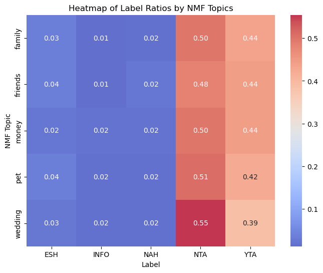
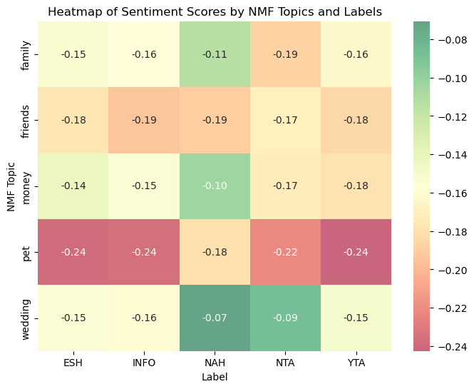
Analyzing time of posting
Incorporating the time of day into the analysis reveals interesting trends in posting behavior and sentiment across topics. Figure 8 illustrates how sentiment scores vary throughout the day. Notably, posts in the Marriage/Wedding category have the highest average sentiment, whereas the Family category consistently exhibits negative sentiment, lacking any timeframe where sentiment turns positive. In contrast, all other topics show at least one instance of positive sentiment during the morning.
Additionally, posting patterns differ significantly by topic. Posts about Family, Friends, and Money are predominantly concentrated after 5 PM, likely reflecting the schedules of students or professionals who write after their daily responsibilities. On the other hand, topics such as Marriage and Pets tend to attract more daytime posts, perhaps indicating that these writers have more flexibility in their schedules. These patterns offer a glimpse into the lifestyle and emotional dynamics of the individuals behind the posts.
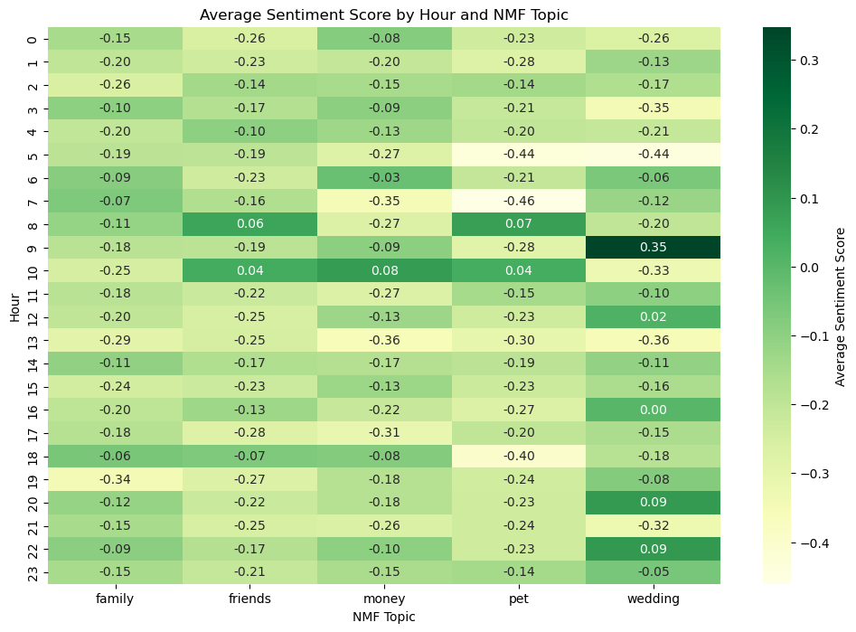
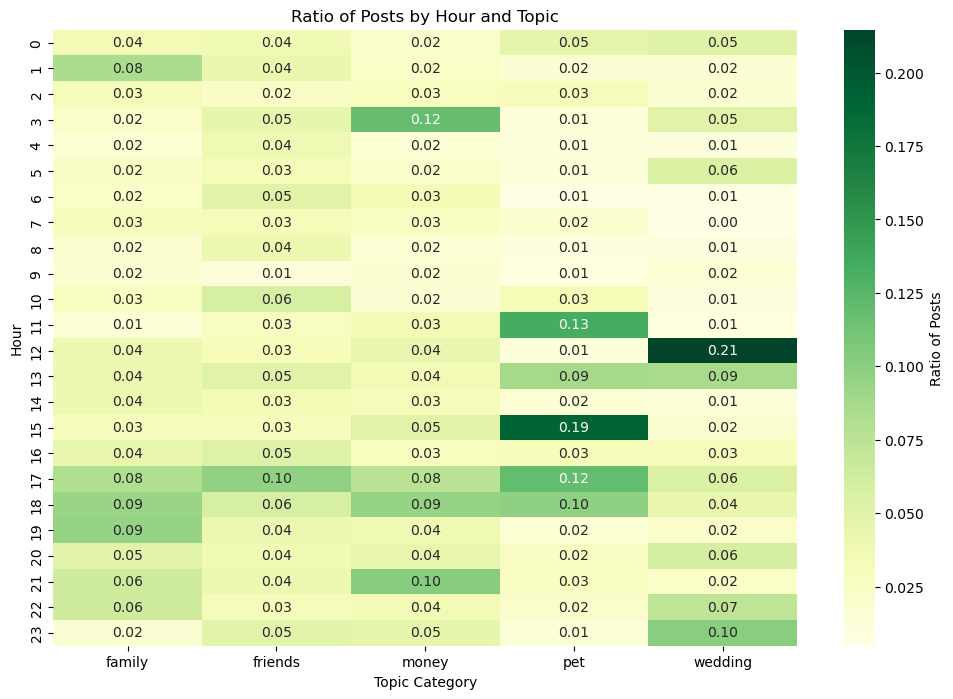
Conclusion
Our analysis demonstrates the depth and diversity of online discourse across platforms like AskReddit, *Am I the A**hole (AITA), Am I Overreacting (AIO), and Dear Abby. Each platform exhibits distinct patterns in usage, sentiment, and thematic focus. For instance, AskReddit* emerges as a space for open-ended discussions and suggestions, in contrast to the advice-driven and morally evaluative nature of AITA and AIO. The external dataset, Dear Abby, mirrors the thematic consistency of these subreddits, emphasizing recurring societal concerns such as relationships, family, and personal dilemmas. Notably, our findings reveal that while the topics and themes have remained stable over time, differences in sentiment and judgment patterns highlight the nuanced ways in which users express themselves and seek validation in digital spaces.
Key insights include the correlation between topic types and sentiment scores, as well as time-of-day posting behaviors. Posts about family, friends, and money tend to attract more negative sentiment, particularly during evenings, reflecting the stresses associated with these themes in daily life. Conversely, topics like weddings and marriage exhibit more positive sentiment, indicative of their celebratory and emotionally significant nature. The posting times for these themes also differ, with career-driven users contributing to evening discussions and more flexible individuals engaging during the day. Together, these findings paint a comprehensive picture of how users across platforms interact, share, and reflect societal norms, offering valuable insights into the evolving dynamics of digital communication.